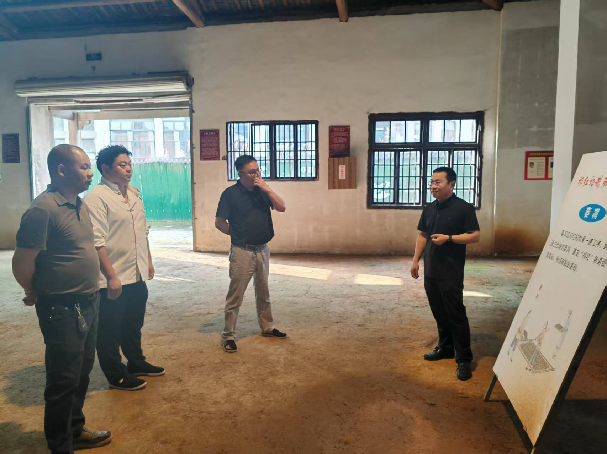
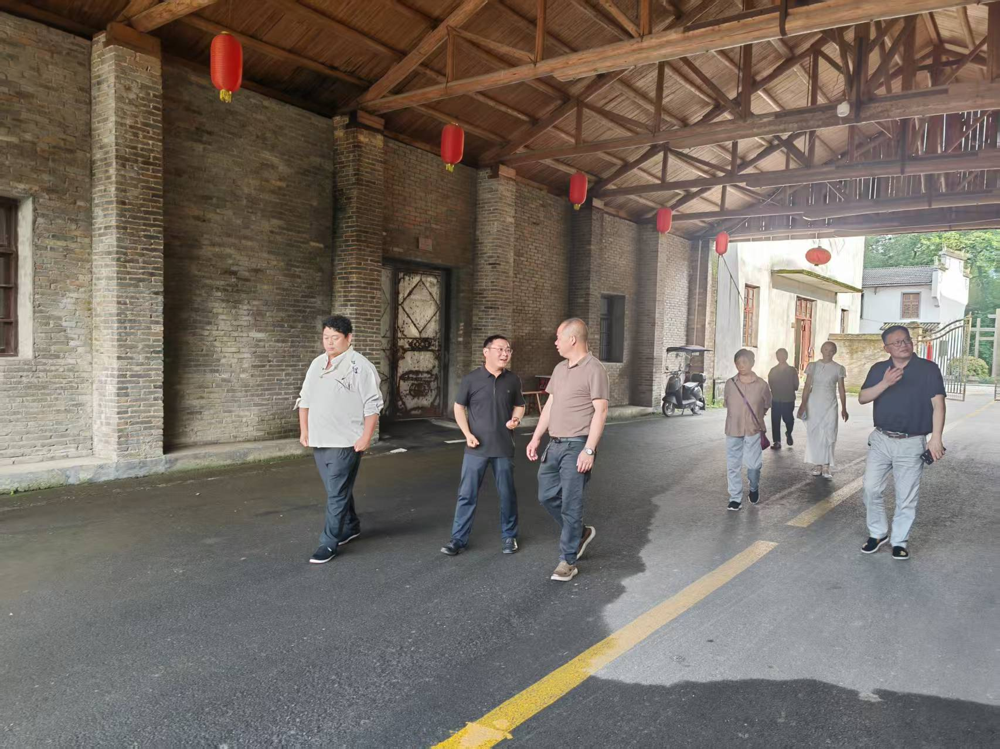

赴黄山祁门红茶博物馆考察交流，探索非遗文化与研学融合新路径
近日，安徽金流竹艺团队前往安徽黄山祁门红茶博物馆开展考察交流活动，围绕非遗文化传播、研学课程设计、传统工艺展示与产业融合等方向进行了深入学习与探讨。
在参观交流过程中，团队重点了解了祁门红茶在传统制作工艺展示、场馆运营、沉浸式研学体验、文创产品开发与文旅融合方面的实践经验。作为同样以传统工艺和地方文化为基础的企业，金流竹艺希望从优秀案例中学习更成熟的课程组织、空间呈现与文化传播方式。
此次考察为金流竹艺后续推进竹编DIY材料包、非遗研学课程和竹编体验空间建设提供了新的参考。未来，公司将持续推动竹编工艺与研学教育、文旅体验、现代设计相结合，让传统竹编文化以更加年轻化、体验化、生活化的方式进入大众视野。
- 学习非遗文化场馆在研学课程设计、讲解体系和空间展示方面的经验。
- 探索竹编DIY产品与青少年劳动教育、亲子体验和文旅活动的结合方式。
- 推动金寨竹编、大别山竹材与现代文创产品、非遗课程体系的融合发展。